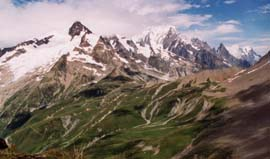

collet de la Seigne, montagne des Glaciers (2694 m, 2747 m)

Départ : refuge des Mottets (1870 m)
Aller : 6,3 km, +1074 et - 197 m, 198 min
Retour : 4,5 km, - 877 m, 288 min
Difficulté : EE
Période : mi juillet - septembre
Remarque : -
Bibliographie : -
Suivre l’itinéraire AsF© 16.2 (page 97) jusqu’au départ du sentier SR (2020 m). Prendre à D la sente qui remonte la croupe, puis atteindre le chalet de la Seigne (2240 m). Monter par la D au collet, en restant au pied des éboulis de la « Montagne de la Seigne ». Suivre la crête frontière jusqu’au col de la Seigne puis à la Montagne des Glaciers.
Descente directe possible sur le GR, en tirant progressivement à G.
Photo Patrice Rabot : le collet à l'extrème droite, et le col